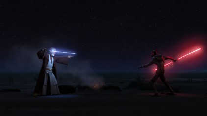

-
Son of Dathomir
Darth Maul was born on the planet Dathomir, a world inhabited by the Nightbrothers, a clan of Zabrak warriors. From a young age, Maul exhibited exceptional combat skills and a strong connection to the dark side of the Force. Recognizing his potential, the Sith Lord Darth Sidious took Maul as his apprentice, training him in the ways of the Sith and preparing him for a future role in their grand plan to overthrow the Jedi Order and the Galactic Republic.
-
REPUBLIC IN CRISIS
Sith apprentice
Sith Lord Darth Sidious kidnaps Maul from Dathomir and trains him as a formidable Sith Assassin. In the end, Maul is sent to Naboo to eliminate Queen Padmé Amidala, who is under threat from the Trade Federation. Maul's mission is to assassinate the queen and create chaos that will allow the Sith to rise to power.
-
The Battle of Naboo
During the Battle of Naboo, Maul confronts Jedi Master Qui-Gon Jinn and his apprentice, Obi-Wan Kenobi. In a fierce lightsaber duel, Maul manages to kill Qui-Gon but is ultimately defeated by Obi-Wan, who slices him in half. Presumed dead, Maul's body falls into a deep chasm, but his spirit endures, fueled by his hatred and desire for revenge against the Jedi.

-
Lost years
Maul's severed lower half is found by his brother, Savage Opress, who brings him to the Nightsister Mother Talzin. Using dark magic, Talzin restores Maul's body with cybernetic legs, allowing him to survive and continue his quest for vengeance. Maul's time in hiding is marked by his growing hatred for both the Jedi and his former master, Darth Sidious, whom he blames for his suffering.

-
CLONE WARS
Return to power
Maul resurfaces during the Clone Wars, seeking to build a criminal empire to challenge both the Jedi and the Sith. He forms an alliance with his brother Savage Opress and establishes control over the planet Mandalore, using its resources to strengthen his forces. Maul's return to power is marked by his ruthless tactics and strategic mind, making him a formidable adversary.
-
Conflict with Sidious
Maul's ambitions eventually lead to a confrontation with his former master, Darth Sidious. In a dramatic showdown, Sidious defeats Maul and reasserts his dominance over the Sith. Despite this setback, Maul's hatred for the Jedi remains undiminished, and he continues to plot their downfall from the shadows.
-
Shadow of the Empire
In the years following the Clone Wars, Maul operates from the shadows, manipulating events to further his goals. He establishes a criminal syndicate known as the Shadow Collective, which includes various factions such as the Black Sun and the Pyke Syndicate. Maul's influence extends across the galaxy, and he becomes a significant player in the underworld.
-
REIGN OF EMPIRE
Final confrontation
Maul's quest for revenge culminates in a final confrontation with Obi-Wan Kenobi on the desert planet of Tatooine. In a brief but intense duel, Maul is ultimately defeated and killed by Obi-Wan, bringing an end to his long-standing vendetta against the Jedi. Despite his death, Maul's legacy as a fearsome Sith Lord and his impact on galactic events endure.

DARTH MAUL
He is presumably the first Sith seen in thousands of years, that killed Jedi in a duel. Trained by Darth Sidious, Maul is a deadly and skilled warrior, known for his double-bladed lightsaber and his distinctive red and black facial tattoos.
Dark Path
Maul's journey starts on Dathomir, among the Nightbrothers, where he is taken by Darth Sidious to be trained as a Sith Lord. His upbringing is steeped in violence and hatred, shaping him into a ruthless assassin dedicated to the dark side of the Force. Later, he's sent to Naboo to eliminate Queen Padmé Amidala, setting off a chain of events that lead to the rise of Sheev Palpatine as a chancellor. He's interrupted by Jedi Qui-Gon Jinn and Obi-Wan Kenobi, leading to a fierce duel where he kills Qui-Gon but is ultimately defeated by Obi-Wan.
Brotherly Bond
Maul's relationship with his brother, Savage Opress, is complex and pivotal to his story. After Maul is presumed dead following his duel with Obi-Wan Kenobi, Savage finds him and brings him back to life using the dark magic of the Nightsisters. This bond between the brothers fuels Maul's quest for revenge against both the Jedi and Darth Sidious, as they work together to build their power and challenge their enemies.
Darth Maul with his brother Savage Opress
Death of Mother Talzin
Maul brought Dooku to Dathomir and the Nightbrothers had made the necessary preparations for Talzin's revival and escorted Dooku to a chamber in a temple near the Nightbrother village so he could be sacrificed. Maul prayed to a monolith, imploring Talzin to reveal herself, and Talzin's essence manifested from the stone and possessed Dooku. Darth Sidious and General Grievous arrived shortly after, having tracked Dooku's signal. ultimately, Sidious killed Talzin by shattering the monolith, causing her essence to dissipate.
Mother Talzin's death at the hands of General Grievous
Shadow Collective
After being cast out by Sidious, Maul builds a criminal empire called the Shadow Collective, uniting various crime syndicates under his rule to challenge both the Jedi and Sith. Maul seeks to establish his own power base in the galaxy. He builds alliances with groups like the Black Sun and the Pyke Syndicate to strengthen his influence.
Darth Maul leading the Shadow Collective
Maul's Visions
During the Imperial Era, Maul became obsessed with the destruction of Sidious and his revenge on Kenobi. His excursions led him to Damanos, where he would encounter visions of unexpected familiar faces. First was his old master Sidious, taunting him about his failures. Then he saw his brother Savage, who had been killed earlier, urging him to let go of his hate. Finally, he saw a vision of his old foe Obi-Wan Kenobi, who told him to let go of his anger and find peace.
Maul confronting Ezra Bridger on Malachor